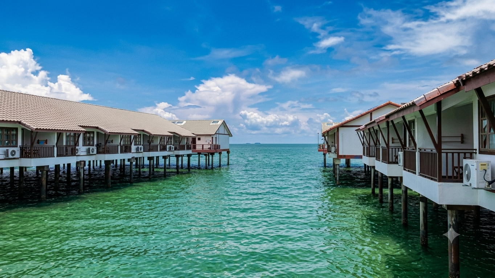
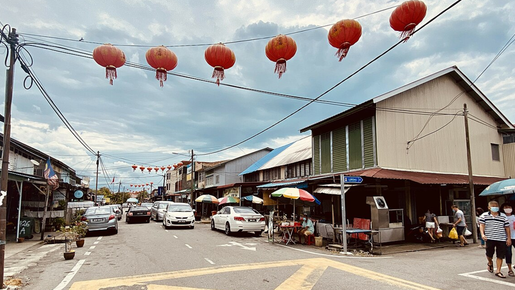
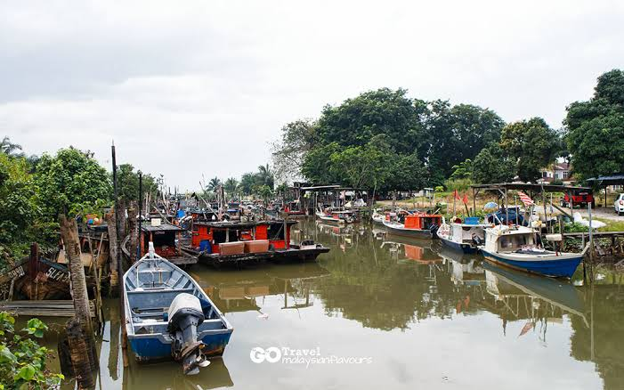
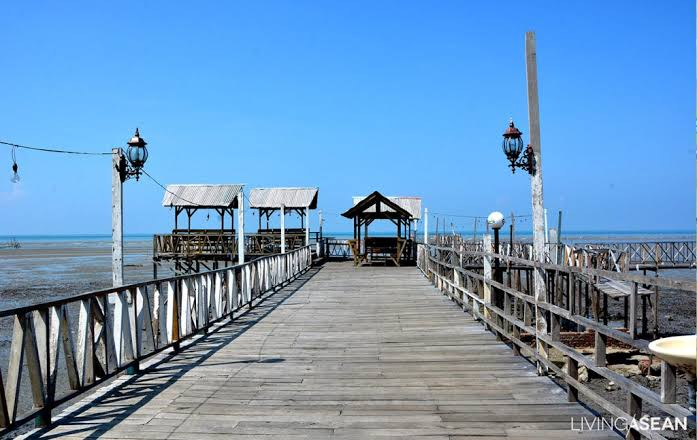

Discover Our Roots
About Tanjung Sepat
Explore the rich history, tight-knit community, and unique coastal culture that defines our beautiful town.
Where is Tanjung Sepat?
Tanjung Sepat is an idyllic, traditional fishing town situated on the coast of Selangor, Malaysia. Known colloquially as a "Hidden Village", it has evolved from a quiet fishing port into a beloved eco-tourism and weekend getaway hub. Visitors are drawn by its slower pace of life, fresh ocean breeze, and celebrated local workshops.

Location & Interactive Map
Located roughly 95 kilometers south of Kuala Lumpur within the Kuala Langat District, Tanjung Sepat borders the Straits of Malacca, nestled smoothly between Morib Beach and Sepang Goldcoast.

Our History
Founded primarily by Chinese settlers who arrived during the late 19th and early 20th centuries, the village initially expanded on agricultural cultivation and deep-sea fishing. Through historical milestones, regional shifts, and modern development, the settlement persevered while proudly conserving its core seaside identities.
The Community
The heartbeat of Tanjung Sepat lies within its passionate locals. From the generational fishermen docking at the piers to local artisans managing home-grown enterprises—such as traditional tapioca chips factories, dragon fruit farms, and bun bakeries—the warmth of this close-knit community greets every traveler.


Culture & Heritage
Immerse yourself in coastal heritage events, old wooden architecture, and traditional crafts. Tanjung Sepat's local culture is tightly bound to maritime rhythms, coffee-roasting traditions, and ancestral festivals celebrating a shared harmony with land and water.